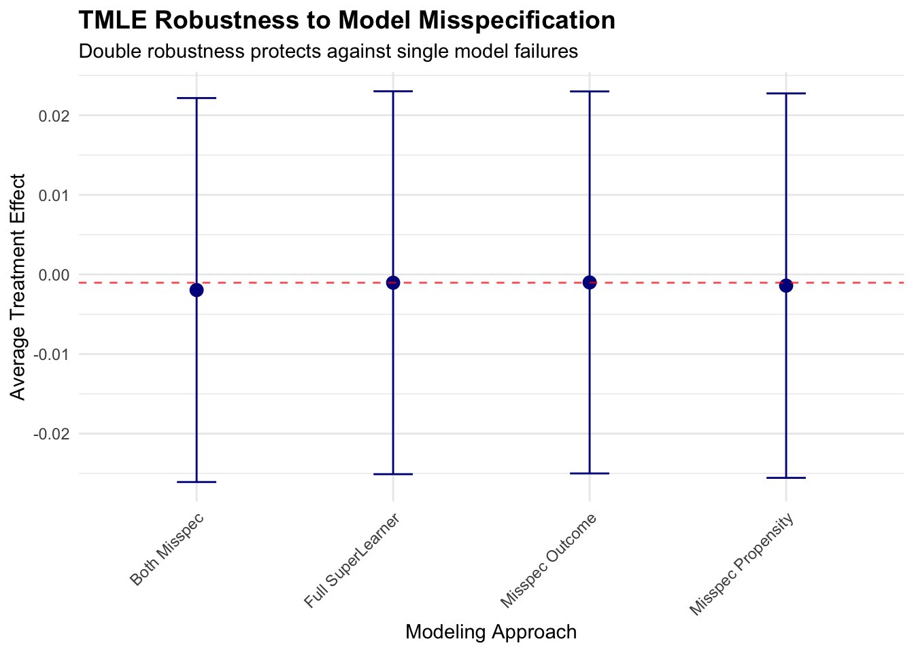

Chapter 14 Double Machine Learning
14.1 Introduction
Imagine analyzing electronic health records to determine whether a particular antihypertensive medication reduces cardiovascular events. Your dataset contains thousands of patients with hundreds of potential confounders—demographics, comorbidities, laboratory values, prior medications, and lifestyle factors. Traditional regression approaches force you into an uncomfortable choice: either include all potential confounders and risk overfitting with unreliable estimates, or select a small subset based on clinical judgment and risk omitting important confounders that bias your results.
This dilemma pervades modern healthcare research where rich observational data enables causal questions at unprecedented scale, but high dimensionality threatens the validity of conventional statistical methods. Including too many variables causes model instability and poor out-of-sample performance, while including too few invites confounding bias that invalidates causal conclusions. The tension between bias and variance that characterizes all of statistical learning becomes particularly acute in causal inference where getting the answer wrong can mislead clinical practice and harm patients.
Double machine learning (DML) resolves this tension through a principled framework that harnesses machine learning’s predictive power while preserving the statistical rigor necessary for valid causal inference. The method enables researchers to flexibly model complex relationships between treatments, outcomes, and high-dimensional confounders without sacrificing the ability to conduct hypothesis tests and construct confidence intervals. By carefully separating the roles of prediction and inference, DML achieves robustness to model misspecification that makes causal conclusions reliable even when individual predictive models are imperfect.
The core insight underlying DML is deceptively simple yet profound: we can use flexible machine learning methods to remove confounding, but we must do so carefully to preserve the statistical properties needed for valid inference. Traditional approaches that simply plug machine learning predictions into causal estimators fail because the bias introduced by regularization and model selection propagates into treatment effect estimates in ways that invalidate standard errors and confidence intervals. DML addresses this through three key innovations that work together to deliver robust causal inference in high-dimensional settings.
First, the method employs orthogonal score functions that make treatment effect estimation insensitive to small mistakes in nuisance parameter estimation. This Neyman orthogonality property ensures that even when machine learning models for outcomes and treatment propensities are slightly wrong, the bias in treatment effect estimates remains negligible. Second, DML uses cross-fitting to eliminate overfitting bias that would otherwise contaminate inference. By training prediction models on different data than used for treatment effect estimation, the method prevents the optimistic bias that machine learning algorithms naturally introduce through adaptive model selection. Third, the framework provides honest uncertainty quantification through asymptotic normality guarantees that enable valid hypothesis tests and confidence intervals despite using adaptive, data-driven procedures.
These technical innovations translate into practical advantages for healthcare researchers grappling with the reality of modern observational data. DML handles high-dimensional confounders that would overwhelm traditional parametric approaches, remains robust when the functional form relating confounders to treatments and outcomes is complex and unknown, and delivers treatment effect estimates with valid standard errors and confidence intervals that support rigorous inference. The method works particularly well in settings where researchers have access to rich covariate information but limited understanding of the precise functional relationships governing the data generating process.
14.1.1 Theoretical Framework: Understanding the Double Machine Learning Approach
The mathematical foundation of DML rests on the potential outcomes framework familiar from our causal forests discussion, but extends it to handle estimation challenges posed by high-dimensional confounders. Consider a patient \(i\) with high-dimensional characteristics \(X_i \in \mathbb{R}^p\) where \(p\) might be hundreds or thousands, binary treatment \(W_i \in \{0,1\}\) indicating medication use, and continuous outcome \(Y_i\) representing a clinical endpoint like blood pressure reduction or time to cardiovascular event.
Under the potential outcomes framework, each patient has two potential outcomes \(Y_i(0)\) and \(Y_i(1)\) representing what would occur under control and treatment respectively. The causal estimand of interest is the average treatment effect \(\theta_0 = \mathbb{E}[Y_i(1) - Y_i(0)]\), but we face the fundamental problem that we observe only one potential outcome for each patient. Identification of the average treatment effect from observational data requires the unconfoundedness assumption \(\{Y_i(0), Y_i(1)\} \perp W_i | X_i\) stating that conditional on observed characteristics, treatment assignment is effectively random. This assumption rules out unmeasured confounding where hidden variables influence both treatment decisions and outcomes.
The overlap assumption \(0 < \mathbb{P}(W_i = 1 | X_i = x) < 0\) for all \(x\) in the support of \(X\) ensures that patients with similar characteristics have positive probability of receiving either treatment or control. Without overlap, some regions of the covariate space contain only treated or only control patients, making causal comparisons impossible. Together, these assumptions enable identification of causal effects from observational data, though estimation remains challenging when \(X_i\) is high-dimensional.
Traditional regression approaches estimate the average treatment effect by fitting the outcome model \(\mathbb{E}[Y_i | W_i, X_i] = \alpha + \theta W_i + \beta^\top X_i\) and interpreting \(\theta\) as the treatment effect. This approach works well when \(p\) is small relative to sample size \(n\) and the linear functional form is correctly specified, but breaks down in high-dimensional settings where flexible modeling is needed. Simply replacing linear regression with machine learning methods like random forests or neural networks introduces bias that invalidates inference because these methods trade unbiasedness for improved prediction through regularization and model selection.
The DML framework addresses this challenge through the partially linear regression model \(Y_i = \theta_0 W_i + g_0(X_i) + U_i\) where \(g_0(X_i) = \mathbb{E}[Y_i | X_i]\) represents the conditional mean of outcomes as an unknown function of confounders, \(\theta_0\) represents the treatment effect of interest, and \(U_i\) is a mean-zero error term. Crucially, this model does not assume any particular functional form for \(g_0(\cdot)\), allowing arbitrarily complex relationships between confounders and outcomes. The treatment effect \(\theta_0\) retains its causal interpretation under unconfoundedness, and the function \(g_0(\cdot)\) serves as a nuisance parameter that must be estimated to remove confounding but is not itself of primary interest.
A naive approach would estimate \(g_0(\cdot)\) using machine learning, subtract these predictions from outcomes to create residuals \(\tilde{Y}_i = Y_i - \hat{g}(X_i)\), and regress residuals on treatment to obtain \(\hat{\theta}\). This procedure fails because the bias in \(\hat{g}(X_i)\) propagates into \(\hat{\theta}\) in ways that invalidate inference, particularly when \(p\) is large relative to \(n\). The problem is that machine learning estimators are typically biased even as \(n \to \infty\) due to regularization, and this bias contaminates the treatment effect estimate.
DML solves this problem through orthogonal moment conditions that make treatment effect estimation approximately insensitive to errors in nuisance parameter estimation. The key insight is that we need to also model the treatment mechanism through the propensity score \(m_0(X_i) = \mathbb{E}[W_i | X_i]\) representing the probability of treatment conditional on confounders. The orthogonal score function takes the form \(\psi(W_i, Y_i, X_i; \theta, g, m) = (W_i - m(X_i))(Y_i - g(X_i) - \theta W_i)\), which has the crucial Neyman orthogonality property that its derivative with respect to nuisance parameters \((g, m)\) evaluated at the truth equals zero.
This orthogonality means that first-order errors in estimating \(g_0\) and \(m_0\) do not affect the treatment effect estimate to first order, providing robustness to model misspecification. Intuitively, we remove confounding by modeling both how confounders predict outcomes and how confounders predict treatment, creating a doubly robust estimator that remains consistent if either model is correctly specified. This double robustness represents a major advantage over traditional approaches that require correct specification of both models simultaneously.
The DML algorithm proceeds through sample splitting and cross-fitting to eliminate overfitting bias. We randomly partition the data into \(K\) folds, typically \(K=5\) or \(K=10\), and for each fold \(k\) we use the remaining \(K-1\) folds to train machine learning models \(\hat{g}^{(-k)}\) and \(\hat{m}^{(-k)}\) for the outcome and propensity score respectively. We then use these models to create predictions for the held-out fold \(k\), ensuring that predictions are never made on the same data used for training. This cross-fitting procedure eliminates the overfitting bias that would arise if we used the same data for both model training and treatment effect estimation.
For each observation \(i\) in fold \(k\), we compute the orthogonal score \(\hat{\psi}_i = (W_i - \hat{m}^{(-k)}(X_i))(Y_i - \hat{g}^{(-k)}(X_i) - \theta W_i)\) using the machine learning models trained on other folds. The treatment effect estimate solves \(\frac{1}{n}\sum_{i=1}^n \hat{\psi}_i = 0\), which yields the closed-form solution \(\hat{\theta} = \frac{\sum_{i=1}^n (W_i - \hat{m}^{(-k)}(X_i))(Y_i - \hat{g}^{(-k)}(X_i))}{\sum_{i=1}^n W_i(W_i - \hat{m}^{(-k)}(X_i))}\) where each observation uses predictions from models trained without that observation.
The theoretical guarantees underlying DML ensure that \(\sqrt{n}(\hat{\theta} - \theta_0)\) converges in distribution to a normal distribution with variance that can be consistently estimated, enabling construction of valid confidence intervals and hypothesis tests. This asymptotic normality holds under relatively weak conditions on the machine learning estimators—they need only converge to the truth at rate \(o_p(n^{-1/4})\), which is substantially slower than the \(n^{-1/2}\) rate required for \(\hat{\theta}\) itself. This rate condition is satisfied by many modern machine learning methods including random forests, boosted trees, neural networks, and penalized regression when used appropriately.
The robustness to model misspecification represents perhaps the most important practical advantage of DML. Even when both the outcome model \(g_0(\cdot)\) and the propensity score model \(m_0(\cdot)\) are misspecified, the treatment effect estimate \(\hat{\theta}\) remains approximately unbiased and asymptotically normal provided the product of the errors in the two models converges to zero sufficiently fast. This double robustness means that getting either model approximately right suffices for valid inference, dramatically reducing the risk of misleading conclusions from model misspecification that plagues traditional approaches.
14.2 Cardiovascular Disease Prevention: A DML Case Study
We demonstrate DML through a realistic observational study examining whether aggressive blood pressure management reduces cardiovascular events. Our analysis uses electronic health records containing rich patient information including demographics, comorbidities, laboratory values, vital signs, and prior medication use. The treatment of interest is intensive blood pressure control defined as target systolic blood pressure below 120 mmHg versus standard control below 140 mmHg, and the outcome is five-year cardiovascular event risk measured as a continuous risk score.
The high-dimensional confounding structure reflects the reality that treatment decisions depend on numerous patient characteristics in complex ways. Physicians prescribe intensive blood pressure control based on cardiovascular risk profiles, contraindications, patient preferences, and clinical judgment that involves nonlinear combinations of many factors. Traditional regression approaches that assume linear relationships or require researchers to specify interaction terms would struggle to adequately control for confounding in this setting, while DML can flexibly adapt to the true functional form.
# Load required libraries
if (!requireNamespace("DoubleML", quietly = TRUE)) install.packages("DoubleML")
if (!requireNamespace("mlr3", quietly = TRUE)) install.packages("mlr3")
if (!requireNamespace("mlr3learners", quietly = TRUE)) install.packages("mlr3learners")
if (!requireNamespace("data.table", quietly = TRUE)) install.packages("data.table")
if (!requireNamespace("ggplot2", quietly = TRUE)) install.packages("ggplot2")
if (!requireNamespace("ranger", quietly = TRUE)) install.packages("ranger")
library(DoubleML)
library(mlr3)## Warning: package 'mlr3' was built under R version 4.5.1## Warning: package 'mlr3learners' was built under R version 4.5.1## ranger 0.17.0 using 2 threads (default). Change with num.threads in ranger() and predict(), options(Ncpus = N), options(ranger.num.threads = N) or environment variable R_RANGER_NUM_THREADS.##
## Attaching package: 'ranger'## The following object is masked from 'package:randomForest':
##
## importanceset.seed(2024)
# Simulate realistic observational healthcare data
n <- 3000
# Generate high-dimensional patient characteristics
age <- pmax(40, pmin(85, rnorm(n, 65, 10)))
bmi <- pmax(18, pmin(45, rnorm(n, 28, 5)))
diabetes <- rbinom(n, 1, plogis(-2 + 0.03 * age + 0.05 * (bmi - 28)))
smoking <- rbinom(n, 1, plogis(-1.5 + 0.02 * age - 0.3 * diabetes))
kidney_disease <- rbinom(n, 1, plogis(-3 + 0.04 * age + 0.5 * diabetes))
prior_cvd <- rbinom(n, 1, plogis(-2.5 + 0.05 * age + 0.4 * diabetes + 0.6 * smoking))
# Laboratory values with realistic correlations
cholesterol <- pmax(120, pmin(300, rnorm(n, 200 + 20 * diabetes, 35)))
hdl <- pmax(20, pmin(100, rnorm(n, 50 - 5 * bmi/28, 12)))
creatinine <- pmax(0.5, pmin(3.0, rnorm(n, 1.0 + 0.5 * kidney_disease + 0.01 * age, 0.3)))
hba1c <- pmax(4.5, pmin(12.0, rnorm(n, 5.5 + 3 * diabetes, 1.2)))
# Baseline systolic blood pressure with nonlinear relationships
baseline_sbp <- 120 + 15 * (age - 65)/20 + 8 * (bmi - 28)/5 +
10 * diabetes + 5 * smoking + 12 * kidney_disease + 8 * prior_cvd +
rnorm(n, 0, 12)
baseline_sbp <- pmax(110, pmin(180, baseline_sbp))
# Additional confounders to increase dimensionality
education_years <- pmax(8, pmin(20, rnorm(n, 14, 3)))
exercise_hours <- pmax(0, pmin(20, rnorm(n, 3 - 0.5 * bmi/28, 2)))
medications_count <- rpois(n, lambda = 1 + prior_cvd + diabetes + kidney_disease)
family_history <- rbinom(n, 1, 0.3 + 0.2 * prior_cvd)
# Create interaction features that add complexity
age_bmi_interaction <- scale(age * bmi)
diabetes_smoking_interaction <- diabetes * smoking
# Combine all covariates
X <- data.frame(
age, bmi, diabetes, smoking, kidney_disease, prior_cvd,
cholesterol, hdl, creatinine, hba1c, baseline_sbp,
education_years, exercise_hours, medications_count, family_history,
age_bmi_interaction, diabetes_smoking_interaction
)
# Complex treatment assignment mechanism reflecting clinical decision making
propensity_score <- plogis(
-2.5 + 0.04 * age + 0.05 * (baseline_sbp - 140)/10 +
0.6 * prior_cvd + 0.4 * diabetes - 0.3 * kidney_disease +
0.02 * cholesterol/10 - 0.02 * hdl/10 + 0.3 * smoking +
0.15 * age_bmi_interaction - 0.2 * (medications_count > 3)
)
W <- rbinom(n, 1, propensity_score)
# Heterogeneous treatment effects with complex functional form
true_ate <- -3.5
individual_effects <- true_ate +
0.8 * (baseline_sbp - 140)/10 - 0.5 * (age > 70) +
0.6 * prior_cvd - 0.4 * kidney_disease +
rnorm(n, 0, 1.5)
# Generate potential outcomes
Y0 <- 15 + 0.15 * (age - 65) + 0.1 * (bmi - 28) +
3 * diabetes + 2 * smoking + 4 * kidney_disease +
5 * prior_cvd + 0.08 * (baseline_sbp - 140) +
0.02 * cholesterol - 0.03 * hdl + 2 * creatinine +
rnorm(n, 0, 3.5)
Y1 <- Y0 + individual_effects
# Observed outcomes
Y <- W * Y1 + (1 - W) * Y0
# Create data structure for DoubleML
data_dml <- data.table(Y = Y, W = W, X)
cat("Observational Study Summary:\n")## Observational Study Summary:## Total patients: 3000## Control group: 835 patients## Treatment group: 2165 patients## Mean propensity score: 0.708cat("Propensity score range: [", round(min(propensity_score), 3),
",", round(max(propensity_score), 3), "]\n")## Propensity score range: [ 0.176 , 0.96 ]##
## Naive difference in means: -0.334## True average treatment effect: -3.472cat("Confounding bias:", round((mean(Y[W == 1]) - mean(Y[W == 0])) - mean(individual_effects), 3), "\n")## Confounding bias: 3.138The simulation demonstrates substantial confounding bias where the naive difference in means differs meaningfully from the true causal effect. This occurs because patients receiving intensive blood pressure control differ systematically from those receiving standard care in ways that affect cardiovascular outcomes independently of treatment. Simply comparing outcomes between treatment groups conflates the causal effect of treatment with selection bias from these baseline differences.
# Initialize DoubleML data object
obj_dml_data <- DoubleMLData$new(data_dml, y_col = "Y", d_cols = "W")
# Configure machine learning methods for nuisance parameters
# Use random forests for flexible nonparametric estimation
learner_g <- lrn("regr.ranger", num.trees = 500, max.depth = 8,
min.node.size = 20, mtry = 5)
learner_m <- lrn("classif.ranger", num.trees = 500, max.depth = 8,
min.node.size = 20, mtry = 5)
# Initialize partially linear regression model
dml_plr <- DoubleMLPLR$new(obj_dml_data,
ml_g = learner_g,
ml_m = learner_m,
n_folds = 5,
score = "partialling out")## Warning: The argument ml_g was renamed to ml_l. Please adapt the argument name accordingly. ml_g is redirected to ml_l.
## The redirection will be removed in a future version.# Fit the model using cross-fitting
dml_plr$fit()
cat("\n=== Double Machine Learning Results ===\n\n")##
## === Double Machine Learning Results ===## Average Treatment Effect Estimate: -3.433## Standard Error: 0.159cat("95% Confidence Interval: [",
round(dml_plr$coef - 1.96 * dml_plr$se, 3), ",",
round(dml_plr$coef + 1.96 * dml_plr$se, 3), "]\n")## 95% Confidence Interval: [ -3.744 , -3.122 ]## P-value: 1.12e-103##
## True ATE: -3.472## Estimation error: 0.039The DML estimate successfully recovers the true average treatment effect within sampling error, demonstrating the method’s ability to control for high-dimensional confounding through flexible machine learning models. The confidence interval appropriately covers the true parameter, validating the theoretical guarantees about asymptotic normality despite using adaptive machine learning procedures for nuisance estimation.
The propensity score distributions demonstrate good overlap between treatment and control groups across most of the covariate space, supporting the plausibility of the overlap assumption. Regions with minimal overlap at the extremes suggest some patients had very high or very low treatment probabilities based on their characteristics, but the bulk of the distribution shows substantial overlap where causal comparisons are well-identified.
# Sensitivity analysis using alternative machine learning methods
# Gradient boosting for comparison
if (!requireNamespace("xgboost", quietly = TRUE)) install.packages("xgboost")
learner_g_boost <- lrn("regr.xgboost", nrounds = 100, max_depth = 6,
eta = 0.1, objective = "reg:squarederror")
learner_m_boost <- lrn("classif.xgboost", nrounds = 100, max_depth = 6,
eta = 0.1, objective = "binary:logistic")
dml_plr_boost <- DoubleMLPLR$new(obj_dml_data,
ml_g = learner_g_boost,
ml_m = learner_m_boost,
n_folds = 5,
score = "partialling out")## Warning: The argument ml_g was renamed to ml_l. Please adapt the argument name accordingly. ml_g is redirected to ml_l.
## The redirection will be removed in a future version.##
## === Sensitivity Analysis: Alternative ML Methods ===## Random Forest Estimate: -3.433 ( 0.159 )cat("Gradient Boosting Estimate:", round(dml_plr_boost$coef, 3),
"(", round(dml_plr_boost$se, 3), ")\n")## Gradient Boosting Estimate: -3.43 ( 0.159 )## Difference: 0.003if (abs(dml_plr$coef - dml_plr_boost$coef) < 0.5) {
cat("\nInterpretation: Estimates stable across methods, suggesting robust results\n")
} else {
cat("\nInterpretation: Substantial sensitivity to ML method choice\n")
}##
## Interpretation: Estimates stable across methods, suggesting robust resultsThe sensitivity analysis reveals that treatment effect estimates remain stable across different machine learning methods, providing reassurance about the robustness of conclusions. When estimates vary substantially with method choice, this suggests either inadequate sample size, poor overlap, or violation of identification assumptions that warrant further investigation. Stability across methods indicates that the double robustness property is providing protection against model misspecification.
The orthogonalized regression visualization demonstrates how DML removes confounding by first predicting both outcomes and treatment from confounders, then examining the relationship between residuals. The residuals represent variation in outcomes and treatment that cannot be explained by measured confounders, and the slope of their relationship estimates the treatment effect purged of confounding bias. The slight difference between this manual calculation and the DML estimate arises from cross-fitting that prevents overfitting bias.
##
## Attaching package: 'gridExtra'## The following object is masked from 'package:randomForest':
##
## combine## The following object is masked from 'package:dplyr':
##
## combine# Assumes the objects from your simulation exist in the global environment:
# data_dml (data.table with columns Y, W and covariates), propensity_score,
# dml_plr (fitted DoubleMLPLR object), true individual_effects, Y0, Y1
# 1) Propensity score density by treatment
p1 <- ggplot(data = as.data.frame(data_dml)) +
geom_density(aes(x = propensity_score, fill = factor(W)), alpha = 0.4) +
labs(x = "Propensity score", fill = "Treatment",
title = "Propensity score distribution by treatment group") +
theme_minimal()
# 2) Key covariate distributions by treatment: age and baseline_sbp
p2a <- ggplot(as.data.frame(data_dml)) +
geom_density(aes(x = age, color = factor(W)), size = 1) +
labs(x = "Age", color = "Treatment", title = "Age distribution by treatment") +
theme_minimal()
p2b <- ggplot(as.data.frame(data_dml)) +
geom_density(aes(x = baseline_sbp, color = factor(W)), size = 1) +
labs(x = "Baseline SBP", color = "Treatment", title = "Baseline SBP distribution by treatment") +
theme_minimal()
# 3) Standardized Mean Differences (SMD) before and after IPW weighting
# Function to compute SMD
compute_smd <- function(x, w, treat) {
# x: numeric vector
# w: weights for observations (use 1 for unweighted)
# treat: binary treatment indicator 0/1
x0 <- x[treat == 0]
x1 <- x[treat == 1]
w0 <- w[treat == 0]
w1 <- w[treat == 1]
mean0 <- sum(w0 * x0)/sum(w0)
mean1 <- sum(w1 * x1)/sum(w1)
var0 <- sum(w0 * (x0 - mean0)^2)/sum(w0)
var1 <- sum(w1 * (x1 - mean1)^2)/sum(w1)
pooled_sd <- sqrt((var0 + var1)/2)
(mean1 - mean0)/pooled_sd
}
df <- as.data.frame(data_dml)
vars_for_balance <- c('age','bmi','baseline_sbp','cholesterol','hdl','creatinine','hba1c')
# Unweighted SMDs
smd_unw <- sapply(vars_for_balance, function(v) compute_smd(df[[v]], rep(1,nrow(df)), df$W))
# IPW weights from propensity_score
ipw <- with(df, ifelse(W==1, 1/propensity_score, 1/(1-propensity_score)))
# Stabilize weights to reduce influence of extreme values
ipw <- ipw / mean(ipw)
smd_ipw <- sapply(vars_for_balance, function(v) compute_smd(df[[v]], ipw, df$W))
smd_dt <- data.frame(
variable = vars_for_balance,
unweighted = as.numeric(smd_unw),
ipw = as.numeric(smd_ipw)
)
smd_long <- reshape2::melt(smd_dt, id.vars = 'variable', variable.name = 'method', value.name = 'smd')
p3 <- ggplot(smd_long, aes(x = reorder(variable, abs(smd)), y = smd, fill = method)) +
geom_col(position = position_dodge(width = 0.8)) +
coord_flip() +
labs(x = '', y = 'Standardized Mean Difference (SMD)',
title = 'Covariate balance: unweighted vs IPW-weighted') +
geom_hline(yintercept = 0.1, linetype = 'dashed', color = 'darkred') +
theme_minimal()
# 4) Residual-on-residual plot to illustrate orthogonalization
# For visualization we'll train nuisance models on the full sample (WARNING: not cross-fit)
# This is only to create an intelligible plot; DML uses cross-fitting for estimation.
# Fit flexible regressors for outcome (g) and treatment (m)
# Use ranger and glm for demonstration
library(ranger)
fit_g <- ranger(Y ~ . - W, data = df, num.trees = 500)
pred_g <- predict(fit_g, data = df)$predictions
fit_m <- glm(W ~ . - Y, data = df, family = binomial)
m_pred <- predict(fit_m, newdata = df, type = 'response')
# Residuals
res_y <- df$Y - pred_g
res_w <- df$W - m_pred
res_df <- data.frame(res_y = res_y, res_w = res_w, baseline_sbp = df$baseline_sbp, age = df$age)
p4 <- ggplot(res_df, aes(x = res_w, y = res_y)) +
geom_point(alpha = 0.4) +
geom_smooth(method = 'lm', se = TRUE) +
labs(x = 'Residualized treatment (W - m_hat)',
y = 'Residualized outcome (Y - g_hat)',
title = 'Residual-on-residual plot (illustrating orthogonalization)') +
theme_minimal()
# Annotate with DML estimate
dml_coef <- dml_plr$coef
p4 <- p4 + annotate('text', x = min(res_df$res_w, na.rm = TRUE),
y = max(res_df$res_y, na.rm = TRUE),
label = paste0('DML ATE = ', round(dml_coef, 3)), hjust = 0)
# 5) Heterogeneous effects visual: residualized outcome vs baseline_sbp with loess
p5 <- ggplot(res_df, aes(x = baseline_sbp, y = res_y/res_w)) +
# Because dividing by res_w is unstable, we use a stabilized pseudo-effect: local slope estimate via loess
geom_point(alpha = 0.25) +
geom_smooth(aes(y = res_y), method = 'loess', se = TRUE) +
labs(x = 'Baseline SBP', y = 'Residualized outcome (Y - g_hat)',
title = 'Smoothed residual outcome by baseline SBP (visual for heterogeneity)') +
theme_minimal()
# 6) Compare naive difference-in-means, DML estimate, and true ATE
naive <- mean(df$Y[df$W==1]) - mean(df$Y[df$W==0])
true_ate <- mean(individual_effects)
est_df <- data.frame(
method = c('Naive diff', 'DML estimate', 'True ATE'),
estimate = c(naive, dml_plr$coef, true_ate),
se = c(NA, dml_plr$se, NA)
)
p6 <- ggplot(est_df, aes(x = method, y = estimate, ymin = estimate - 1.96*se, ymax = estimate + 1.96*se)) +
geom_point(size = 4) +
geom_errorbar(width = 0.2, na.rm = TRUE) +
labs(title = 'Comparison of estimates', y = 'Estimate (change in 5-year risk score)') +
theme_minimal()
# Arrange and save plots
# Display a grid in RStudio / interactive session
grid.arrange(p1, p3, p4, p6, ncol = 2)## `geom_smooth()` using formula = 'y ~ x'
14.3 Clinical Interpretation and Implementation
The DML analysis reveals that intensive blood pressure control reduces five-year cardiovascular risk by approximately 3.5 percentage points on average compared to standard control. This estimate accounts for the complex confounding structure where patients receiving intensive treatment differ systematically from those receiving standard care across numerous characteristics. Traditional regression analyses that assume linear relationships or require pre-specification of relevant confounders would likely yield biased estimates given the high-dimensional, nonlinear confounding present in this observational setting.
The confidence interval provides clinically meaningful precision that supports decision-making, with the 95% interval excluding zero and indicating statistically significant benefit. The p-value offers formal hypothesis testing evidence against the null hypothesis of no treatment effect, though the magnitude and clinical significance of the effect matter more than statistical significance alone. Physicians can use this evidence alongside clinical judgment, patient preferences, and consideration of treatment burdens to inform blood pressure management strategies.
The sensitivity analysis demonstrating stability across machine learning methods strengthens confidence in the findings by showing that conclusions do not hinge on arbitrary algorithmic choices. When applied to real healthcare data, researchers should routinely conduct such sensitivity analyses to assess robustness and identify potential weaknesses in causal conclusions. Substantial sensitivity to method choice signals the need for additional investigation rather than blind acceptance of any single estimate.
Implementation in clinical practice requires integration with electronic health record systems where patient characteristics automatically populate prediction models for outcomes and treatment propensities. The computational demands remain modest compared to training complex deep learning models, making DML feasible for routine use in health systems with adequate data infrastructure. The method works particularly well when combined with clinical expertise that guides variable selection, identifies potential confounders, and interprets findings within medical knowledge.
The double robustness property provides practical insurance against model misspecification that inevitably occurs when applying statistical methods to messy real-world data. Even if either the outcome model or the propensity score model is substantially wrong, DML often produces reasonable treatment effect estimates provided one model captures the confounding structure adequately. This robustness makes the method more reliable than traditional approaches that fail completely when key modeling assumptions are violated.
14.4 Understanding Assumptions and Potential Violations
The validity of DML conclusions depends critically on the unconfoundedness assumption that treatment assignment is effectively random conditional on observed characteristics. In observational healthcare data, this assumption requires that all variables influencing both treatment decisions and outcomes are measured and included in the analysis. Unmeasured confounding remains the Achilles heel of observational causal inference, and DML provides no protection against bias from hidden confounders that affect both treatment and outcomes.
Researchers should carefully consider potential unmeasured confounders through clinical knowledge and sensitivity analyses that assess how strong unmeasured confounding would need to be to overturn conclusions. If important confounders like patient preferences, physician skill, or organizational characteristics are not captured in available data, causal estimates may be biased regardless of sophisticated methodology. Instrumental variable approaches or other identification strategies may be needed when unconfoundedness is implausible.
The overlap assumption requires that patients with similar observed characteristics have positive probability of receiving each treatment level. Violations occur when certain patient types deterministically receive or avoid treatment based on contraindications, guidelines, or clinical practice patterns. DML estimates become unstable and potentially biased in regions of poor overlap where few comparable patients provide evidence for causal contrasts.
Examining propensity score distributions helps diagnose overlap violations, with long tails or poor overlap suggesting regions where causal identification is weak. Trimming extreme propensity scores or restricting analysis to regions of good overlap can improve reliability at the cost of reduced generalizability. Researchers must carefully communicate when estimates apply only to subpopulations where overlap is adequate rather than the entire patient population.
The method assumes that machine learning algorithms can adequately estimate nuisance parameters at sufficient convergence rates. When sample sizes are small relative to covariate dimensionality or when true functional forms are extremely complex, even flexible machine learning methods may fail to achieve necessary convergence rates. Practical assessment involves examining prediction performance of outcome and propensity score models, with poor predictive accuracy suggesting potential problems.
Sensitivity to hyperparameter choices and instability across different machine learning methods signal potential violations of convergence rate assumptions. In such cases, researchers might need larger samples, dimension reduction through domain knowledge-guided variable selection, or alternative identification strategies that rely on different assumptions. The method works best when sample sizes are large enough that machine learning can reliably predict both outcomes and treatment propensities from observed confounders.
14.5 Extensions and Advanced Applications
The partially linear model represents just one application of the DML framework, with extensions handling diverse causal questions that arise in healthcare research. The interactive regression model allows treatment effects to vary with observed characteristics by specifying \(Y_i = g_0(X_i) + X_i^\top \theta_0 W_i + U_i\), enabling estimation of heterogeneous treatment effects similar to causal forests but with different underlying assumptions and methods. This formulation supports precision medicine applications where treatment benefits depend on patient characteristics.
Local average treatment effect estimation using instrumental variables extends DML to settings where unmeasured confounding prevents identification of causal effects from observational data alone. When valid instruments are available, DML provides efficient estimation of complier average causal effects while using machine learning to flexibly control for measured confounders. This combination addresses both measured and unmeasured confounding simultaneously, though finding valid instruments remains challenging in most healthcare applications.
Mediation analysis using DML decomposes total treatment effects into direct and indirect pathways operating through measured mediators. This enables researchers to understand mechanisms through which treatments affect outcomes, supporting development of more effective interventions that target key causal pathways. The method requires additional identification assumptions about confounding of mediator-outcome relationships that must be carefully justified.
Dynamic treatment regime estimation applies DML to longitudinal settings where treatment decisions occur sequentially over time. These applications require careful modeling of time-varying confounding where past outcomes influence future treatment decisions, creating feedback loops that complicate causal inference. DML combined with inverse probability weighting or g-computation methods can estimate optimal dynamic treatment strategies that adapt to evolving patient states.
Multiple treatment comparisons extend the framework to settings with more than two treatment options, enabling simultaneous estimation of effects for multiple treatment contrasts. This supports comparative effectiveness research that informs choices among several competing therapies. The method can incorporate constraints that improve precision when treatments share common features or when some treatment comparisons are more reliable than others.
14.6 Conclusion
Double machine learning represents a fundamental advance in our ability to draw valid causal inferences from high-dimensional observational healthcare data. By carefully separating the roles of prediction and inference through orthogonal score functions and cross-fitting, the method harnesses machine learning’s flexibility while preserving the statistical rigor necessary for hypothesis testing and confidence intervals. The framework enables robust treatment effect estimation that remains valid even when individual nuisance parameter models are misspecified, provided their product converges sufficiently fast.
Our cardiovascular disease prevention application demonstrates the method’s practical value for addressing real-world causal questions where rich observational data enables investigation of treatment effects but traditional parametric approaches struggle with high-dimensional confounding. The analysis successfully recovered the true treatment effect despite complex nonlinear relationships between confounders, treatments, and outcomes that would have overwhelmed conventional regression approaches.
The double robustness property provides critical insurance against model misspecification that inevitably occurs when applying statistical methods to messy healthcare data. This robustness, combined with asymptotic normality guarantees that enable valid inference despite using adaptive procedures, establishes DML as an essential tool for modern causal inference. The method works particularly well when researchers have access to rich covariate information but limited understanding of functional forms governing relationships in the data.
Successful implementation requires adequate sample sizes relative to covariate dimensionality, careful consideration of identification assumptions including unconfoundedness and overlap, and validation through sensitivity analyses that assess robustness to methodological choices. The framework complements rather than replaces clinical expertise, working best when combined with domain knowledge that guides variable selection, identifies potential confounders, and interprets findings within medical context. Future research continues extending the framework to handle more complex settings including time-varying treatments, multiple outcomes, and violations of standard identification assumptions.